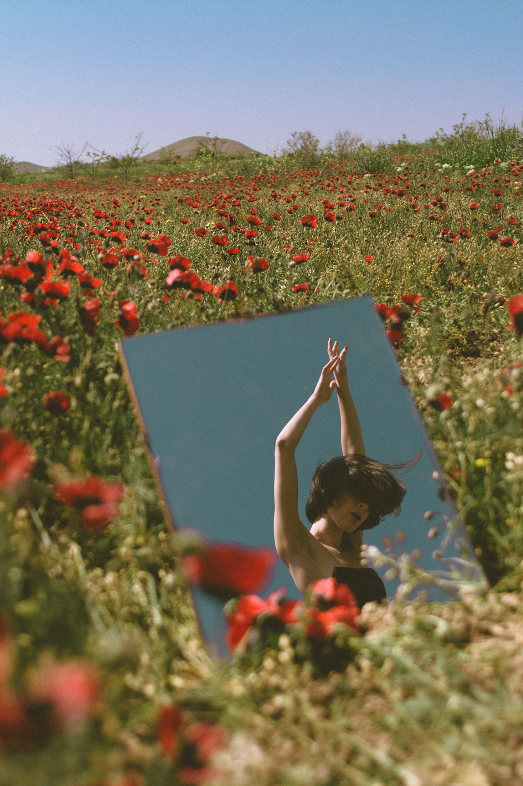

Место работы: Orkhan Aslanov Studio
Рубрика: Фотография
Почта: vikalipnitskaya09@gmail.com
Дата публикации: 24.09.2021
Как появился интерес к тому, чем Вы занимаетесь сейчас?
- Увлечение фотографией у меня появилось благодаря отцу - он любил снимать с юности и всегда старался привить мне интерес к фотографии. Я почему-то очень долго не любила это дело и ни в какую не хотела пробовать. Фотоаппарат казался мне в тот момент времени чем-то очень сложным и мне легче было просто не вникать в эту тему.
Но однажды папа всё-таки уговорил меня и убедил меня попробовать, дав одну из своих камер. Тогда я только начала учиться в университете, 1-2 курс. Впервые пофотографировав, я поняла, что всё же хочу попробовать и стала потихоньку изучать основы фотографии.
Также фотографировала всех, кто окружал меня в повседневной жизни и постепенно это стало моим серьёзным увлечением.
Имеется ли у Вас особая, выделяющая Вас в этом деле черта?
- Мне сложно сказать, что меня выделяет. Возможно потому, что я до сих пор в поисках своего особенного стиля. Снимая, я стараюсь по максимуму передать атмосферу происходящего. Мне больше всего нравится снимать портреты и я стараюсь снять человека в той обстановке, той стилистике, которая подойдет именно ему.
Как Вы обучались данному навыку?
- Благодаря советам отца поначалу, далее самостоятельно. Через интернет, так же вдохновлялась разными фотографами.
Какие возникали неожиданные трудности, и как Вы их преодолевали?
- Основная трудность для меня заключалась в моей нерешительности и стеснительности. Любить снимать людей и при этом боясь с ними общаться невозможно. Поэтому я стала работать над этим, стараясь больше общаться и знакомиться с людьми. Сейчас мне уже гораздо проще, но я всё еще продолжаю работать над этим.
Какие уже имеющиеся у Вас навыки/таланты помогли Вам сделать процесс Вашего обучения проще?
- Я всегда любила рисовать и уделяла этому очень много времени. Думаю, что это достаточно повлияло на то, как я вижу цвета на фото, какие их сочетания люблю, ну и в принципе, тут важна насмотренность в изобразительном искусстве.
Стараюсь и сейчас продолжать развиваться в рисовании.
Есть ли что-либо, чему Вы ещё не обучились? Что Вам помешало?
- Очень хочу понимать и выстраивать искусственный свет, но на данный момент для меня это вопрос техники, которую пока что я не приобрела. Также меня привлекает кинематографическая фотография. Я активно занимаюсь изучением этой темы и это только вопрос времени.
Коротко, как Вы используете Ваш талант сейчас?
- В данный момент я занимаюсь ретушью, также я занимаюсь фрилансом, делая съёмки.
Какие дальнейшие планы?
- В первую очередь, если говорить в долгосрочной перспективе, то я работаю над фото проектом и создаю портфолио. Так же в моих планах продолжать развиваться в сфере фотографии.